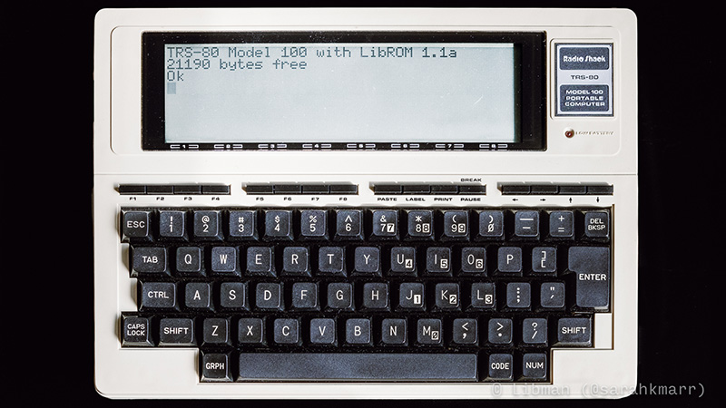
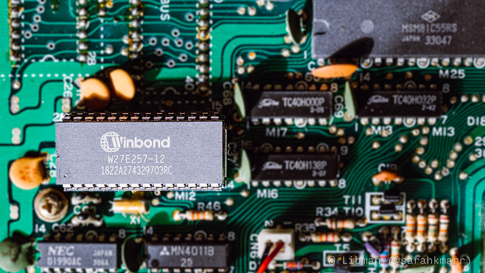
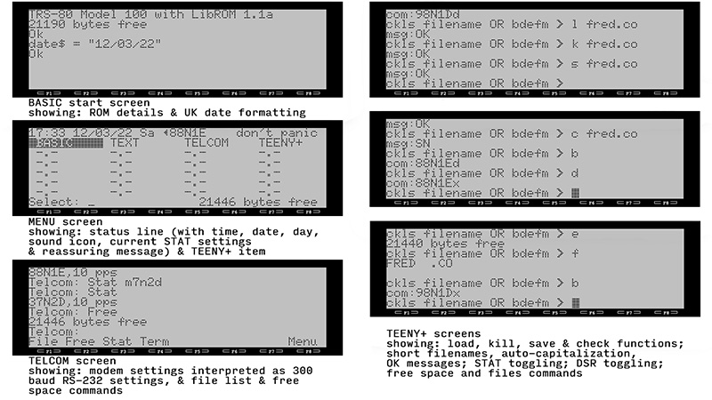
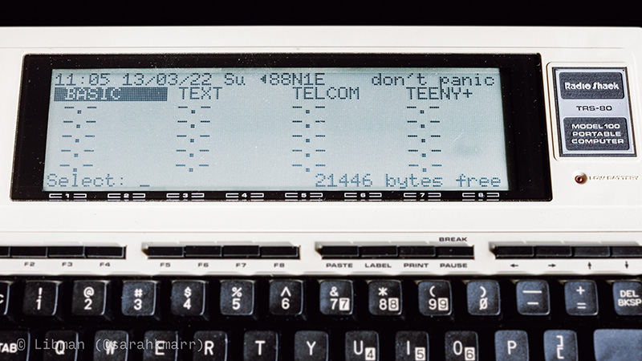
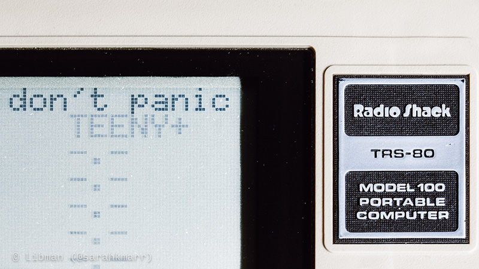

Retrocomputing Pages: TRS-80 Model 100

LibROM: a Custom ROM for UK and US Model 100s
Quick download link: LibROM
When I got my TRS-80 Model 100, a UK model, I discovered that UK Model 100s don't have a modem. Eh, no big deal. But! what was a big deal is that UK ROMs have all their routines in different locations to American ROMS, so nothing which uses ROM calls will run on them; REXCPM isn't compatible, etc. Anyway, fast forward and I've learned about the Model 100, picked up 8085 assembly, got to work on Ken Pettit's annotated ROM listing, disassembled Ron Wiesen's 'Teeny' — with helpful pointers from Steve Adolph — and hex-edited my way to LibROM.
Click here to download the zip file, which contains a .bin file to be program an EPROM and a .asm file which contains a heavily annotated assembly listing of the ROM. Although LibROM was designed for non-American machines, it should work in American Model 100s, too. (Note, however, that early American models used non-standard pins for the ROM chip so it may not be trivial to replace it. Also, you might want to back out the change of date format, for American use.)
I used a XGecu TL866II Plus EPROM programmer, which did the job without any problems. I programmed the ROM onto a Winbond W27E257 EEPROM, which works fine in the machine, and which has the advantage of being electronically erasable and reprogrammable.

I haven't had time to test the ROM as thoroughly as I'd like. Everything seems fine, but I wouldn't use it for mission-critical Model 100 operations. It works in VirtualT, although there seems to be a VirtualT bug which prevents Teeny+ for loading large files: VirtualT doesn't refill the loading buffer once the first filled buffer has been emptied. (I have loaded large files on the actual Model 100 using Teeny+.)
Description
LibROM started as an adaptation of the Model 100 American ROM for UK (and other non-American) machines which lack a modem, so that software and external ROMs which make calls to ROM routines will work. It grew from that to include other bug fixes and enhancements - including in-ROM disk management - replacing modem, address and schedule code to do so.

Communications
- Removal of modem functions: LibROM always sets ports to use RS-232 and not the modem. If a STAT is entered beginning with 'M' it is interpreted and stored as the same stat for RS-232 with a baud rate of 300. For example, "STAT M8N1E" results in a STAT of 38N1E. The CALL (i.e. dialing) function has been removed.
- The ADDRSS and SCHEDL functions are removed, to make room for disk functionality.
- Changes to TELCOM: the "Find" (F1) and "Call" (F2) instructions are replaced with "File" (F1), to display a list of files in memory, and "Free" (F2), to display free memory.
Localization
- DATE$ processes dates in UK (non-American) DD/MM/YY format (as described in the UK manual), and the MENU screen shows the date in that format. (The storage format of the date in memory is unaffected.)
Display
- The MENU screen top line now shows: time, date, day, a sound on/off icon, the current STAT settings and a reassuring message
- Character 88H (136) is changed from a sans serif 'i' to 'π'. This matches the (incorrect) UK version of the "Model 100 Quick Reference Guide" and the Model 102 character set, and seems more useful.
- The text for July is changed from "JLY" to the more usual (and Model 102's) "JUL".
- The opening-screen text in BASIC shows which version of LibROM is running.
- The capitalization of "Bytes free" is standardized to "bytes free".

Sound
- Global SOUND ON / SOUND OFF: these functions now turn all sound on/off, not just cassette and modem sounds. This includes system beeps. Run times are unaffacted: a 2 minute tune with sound on will be two minutes of silence with sound off. The MENU-screen sound icon is changed accordingly.
The PRINT Button (Sound and Scrolling)
- The PRINT button is repurposed to toggle sound on and off. This does not need to be done when on the MENU screen. The MENU-screen sound icon is changed accordingly.
- Shift+PRINT toggles now toggles scrolling on and off. This does not need to be done when on the MENU screen. Note that many applications, including the MENU screen, also turn scrolling on or off, so settings may change without use of shift+PRINT.
Bug Fixes
- The ATN function is fixed to use correct (Model 102) coefficient in calculations.
- The "search for file" ROM routine is fixed to allow searching for 6+2-character filenames, not just 4+2.
Disk Management: Teeny+
Ron Wiesen's Teeny disk management software is implemented in ROM and augmented to create Teeny+. An entry for Teeny+ is added to the MENU screen.
Teeny+ makes the following changes to Teeny:
- the command memory is cleared before each entry to prevent unwanted results
- there is no longer a need to add spaces to filenames shorter than 6+2 characters (e.g. the file HI.BA can be loaded using "L HI.BA" rather than "L HIssss.BA", where 's' is a space)
- commands are automatically capitalized so a mixture of lower- and upper-case characters can be used on entry (e.g. "S fred.do", "s FRED.DO", "S fReD.dO" are all valid and all execute "S FRED.DO")
- there is no longer a need to supply a dummy filename for commands which do not require a filename
- Teeny+ sets the communications STAT to 98N1D when executed, and displays it to the user, but saves the existing system STAT beforehand, so that other STAT values can be used in Teeny+, if required
- the displayed STAT value has a suffix of 'd' if a DSR check is required, and 'x' if not
- the 'B' command toggles between 98N1D and the saved system STAT, and displays the newly active STAT
- exiting Teeny+ restores the system to the saved system STAT (rather than leaving as 98N1D)
- the requirement for a DSR check can be toggled with the 'D' command; the new setting is displayed
- commands have been added to list files in memory ('F') and display empty (free) space in memory ('E')
- the prompt text has been updated to reflect changes from Teeny
- the error message text has been updated to report "msg" rather than "Err" as some messages are not errors
- the K, L & S functions now report an "OK" message when executed successfully - the command to exit Teeny+ is now 'M' (for "MENU")
- the command to check for the existence of a file on disk is now 'C' (for "Check") (In fact, just like Teeny, Teeny+ interprets any command which is not K, L, S, B, D, E, F or M as "check file on disk".)
full list of commands:
- C file - check if file exists on drive
- K file - kill (delete) file on drive
- L file - load file from drive to local memory
- S file - save file from local memory to drive
- B - toggle baud and other settings (STAT) between saved system STAT and 98N1D
- D - toggle requirement for DSR on ('d') and off ('x')
- E - display empty (free) space in local memory
- F - display list of files in local memory
- M - return to MENU (exit Teeny+)

Desktop Image (1080 & 4K)
Here's a photograph I took of the internals of my (UK) TRS-80 Model 100, should you wish to use it as a desktop wallpaper. The zip file includes both 1080 and 4K versions, and you can downloading it by clicking here or on the image below.